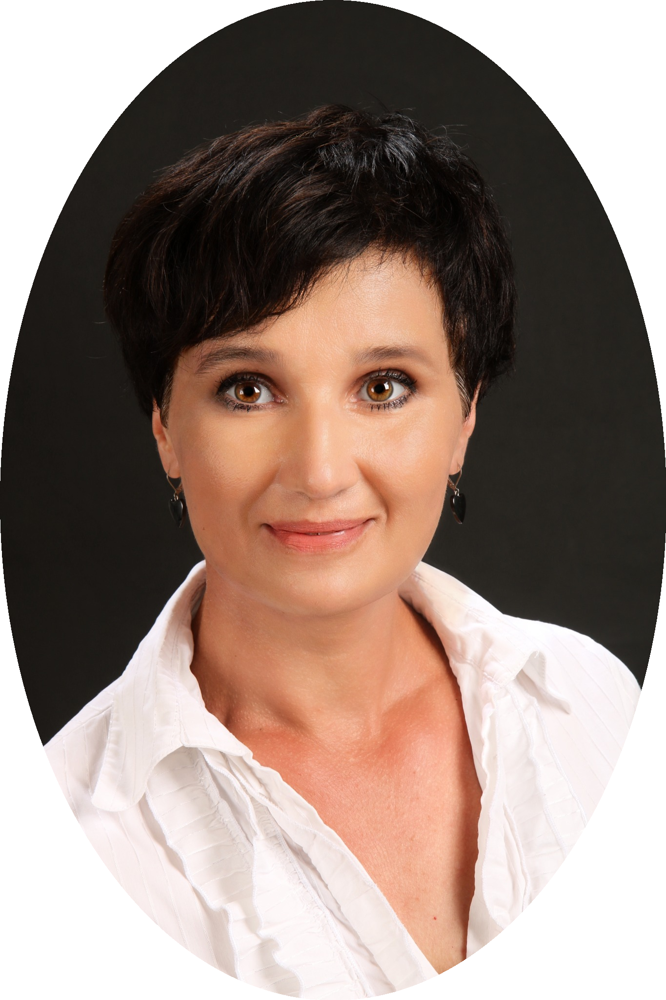

„Skutečná podpora vychází z pochopení, že každý člověk má svůj vlastní příběh a své vlastní zdroje síly.“ – Irvin D. Yalom
O mně
Jsem psycholožka, psychoterapeutka a koučka zaměřující se na podporu klientů při překonávání obtíží, hledání řešení a rozvíjení jejich potenciálu. Ke každému přistupuji s respektem a snahou porozumět jeho jedinečné situaci. Můžete otevřeně sdílet své starosti v bezpečném prostředí, kde Vás nikdo nebude soudit. Společně najdeme přístupy a řešení, která nejlépe odpovídají Vašim cílům a tempu, jaké Vám vyhovuje. Věřím, že každý má v sobě skryté zdroje síly a schopností, které lze objevit a posílit a nalézt tak více smyslu a radosti ve svém životě.
Mojí hlavní snahou je, aby pro Vás byla spolupráce užitečná a přinesla reálné změny. Proto pravidelně zjišťuji, jak hodnotíte naši spolupráci i dosažený pokrok. Na základě Vašich zpětných vazeb upravuji terapeutický plán a přístup tak, aby co nejlépe odpovídal Vašim potřebám a cílům.
Mimo svou profesi si vážím rovnováhy v životě a tuto hodnotu se snažím předávat i ve své práci. Každý krok k lepšímu životu stojí za to a já Vás na této cestě ráda podpořím.
Konzultace na míru Vašim potřebám
Vždy se zaměřuji na individuální potřeby a přání klienta. Můj hlavní přístup vychází z psychoterapie zaměřené na řešení (Solution Focused Therapy), která klade důraz na budoucnost a konkrétní kroky vedoucí ke změně. Podle aktuálních potřeb klienta cíleně využívám osvědčené techniky z dalších směrů, jako jsou transakční analýza, logoterapie, kognitivně-behaviorální terapie, prožitková a emocionální terapie, narativní terapie nebo krizová intervence. Tyto techniky volím vždy tak, aby terapie byla efektivní, systematická a maximálně přínosná.
Vedle psychoterapie poskytuji také psychologické poradenství, koučování, hypnoterapii a mediaci. Podrobné rozlišení těchto jednotlivých služeb naleznete zde.
Věřím, že duševní pohoda je úzce spojená s tělesným zdravím. Proto v případě potřeby propojuji terapeutickou práci s aspekty zdravého životního stylu, jako je pohyb, spánek, výživa či zvládání stresu, vždy s ohledem na individuální možnosti a cíle klienta.
Vím, jak důležité je najít si čas na sebe i při pracovním vytížení. Proto nabízím konzultace v odpoledních hodinách nebo o víkendu, aby Vám co nejlépe zapadly do Vašeho rozvrhu. Pokud nenajdete vhodný termín v objednávkovém systému zde, napište. Ozvu se vám do 24 hodin a domluvíme termín, který bude vyhovovat Vašim potřebám a možnostem.
Jak probíhá první konzultace?
První setkání slouží také k tomu, abyste zjistili, zda Vám spolupráce vyhovuje. Společně se podíváme na Vaši situaci, Vaše přání a očekávání. Budete mít prostor sdílet to, co považujete za důležité, a pokud nevíte, kde začít, pomohu Vám najít směr. Na konzultaci není žádný tlak, tempo si určujete sami.
Jak často musím chodit?
Žádný závazek není nutný. Můžete přijít jednou, několikrát nebo podle své potřeby. Kdykoliv se rozhodnete konzultaci ukončit, je to zcela na Vás. Pokud se v budoucnu rozhodnete vrátit, dveře jsou Vám otevřené.
Etické zásady
Kladu důraz na vytváření bezpečného a respektujícího prostředí, kde můžete otevřeně sdílet své problémy. Moje práce se řídí etickým kodexem Českomoravské psychologické společnosti a České asociace pro psychoterapii, které garantují vysoký standard péče. Zásady mlčenlivosti dodržuji i po skončení spolupráce a spolupracuji pouze s odborníky, kteří tyto principy rovněž ctí. Pro zajištění odborné kvality se kontinuálně vzdělávám a pracuji pod supervizí (pravidelná konzultace vlastní praxe za účelem rozvoje psychoterapeutických dovedností).
Dodržuji všechny zásady ochrany osobních údajů (GDPR). Vaše údaje nejsou zapisovány do lékařských záznamů, protože moje praxe funguje mimo zdravotnické zařízení. Všechny informace zůstávají důvěrné a jsou zpracovávány výhradně pro účely naší spolupráce. Sdílení údajů probíhá v anonymní podobě pouze se supervizorem, aby byla zajištěna co nejvyšší kvalita služeb. Informace o Vašich právech (např. právo na výmaz údajů nebo jejich přenos) jsou Vám vždy k dispozici.
Jsem členkou Českomoravské psychologické společnosti a kandidátní členkou České asociace pro psychoterapii, kde případně můžete podat stížnosti proti porušení etického kodexu.
Vzdělávání a kurzy
Neustálé vzdělávání je pro mě zásadní. Kromě magisterského studia jednooborové psychologie jsem absolvovala řadu odborných kurzů, školení a workshopů. Pracuji pod supervizí, využívám intervize, neustále se vzdělávám v dalších kurzech a také samostudiem. V roce 2026 dokončím komplexní psychoterapeutický výcvik SF a hypnoterapie. Tyto znalosti mi umožňují nabídnout pestrou škálu přístupů a nástrojů, které přizpůsobuji každému člověku na míru.
Kromě individuální práce s klienty se externě věnuji i výuce studentů psychologie na vysoké škole, kde předávám své znalosti a zkušenosti budoucím odborníkům. Tato pedagogická činnost mě obohacuje o nové pohledy a udržuje mě v kontaktu s aktuálními trendy v psychologii.
Mé technické vzdělání a praxe v technických profesích, včetně vedoucích pozic, mi umožňují chápat specifika různých pracovních prostředí. Tato zkušenost mi pomáhá při práci s klienty, kteří čelí pracovním výzvám, jako je stres, vyhoření, změna kariéry nebo konflikty na pracovišti. Analytické myšlení a schopnost strukturovaně řešit problémy propojuji s lidským a empatickým přístupem.
Celoživotní zkušenosti dobrovolníka, např. při práci se slepými dětmi, tělesně postiženými i v hospici, mě obohacují o hlubší porozumění lidskému prožívání a odolnost v náročných situacích.
Nechte svůj život rozkvést.
Ráda Vás podpořím.